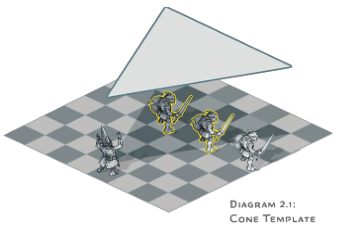
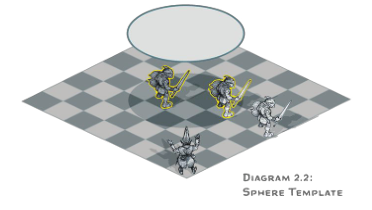
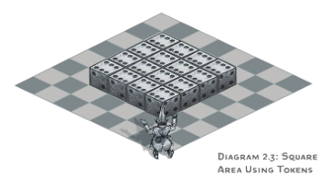
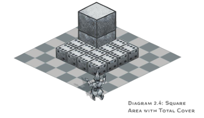
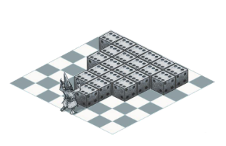
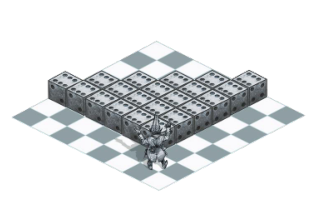
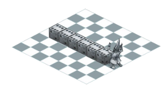
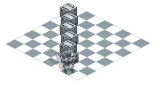
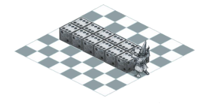
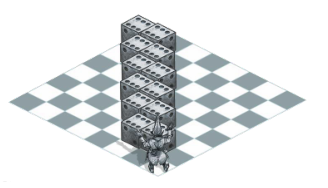

施法 Spellcasting
本節擴展了玩家手冊和城主指南中所提及的施法規則，並提供了詳細說明和新的選項。
察覺法術的施展 Perceiving a Caster
at
Work
許多法術展現出明顯可見的效果：如火焰爆炸，冰墻，傳送等等。其餘的某類法術，如魅惑類人一樣，沒有任何可見的、可聽見的、或其他可察覺其效果的跡象，並且很容易被不受其影響的人所忽視。正如《玩家手冊》中所提到的，你通常不知道一個法術已經被施放了，除非這個法術產生了一個能夠引起注意的效果。
但是施法的動作呢？是否有可能有人正察覺到一個法術正在被施放於他們的面前？要被覺察到，這次施法必須包含言語，姿勢或材料。無論使用的是在法術描述中所指定的材料物件、材料包或者法器，該材料成分的具體形式對於感知結果而言並不重要。
如果對法術成分的需求已經被一種特殊的能力所取代，比如法師微妙的法術特性或者許多生物所具有的天生施法能力，那麼施法是不可察覺的。如果一個不可察覺的施法產生了一個可感知的效果，通常不可能在沒有其他證據的情況下確定施法者是誰。
辨識法術 Identifying a
Spell
有時一個角色會想要識別一個對方正在施放或已經施放的法術。為此，角色可以在對方施放法術時使用他們的反應來識別法術，或者他們可以在對方施放之後使用一個動作來識別法術的效果。
如果一個角色感知到了施法、法術效果，或者兩者都感知到了，該角色可以通過反應或動作來做一個智力（奧秘）檢定。DC = 15 +法術等級。如果被感知者的法術以職業法術的形式施放，並且進行感知的角色也是該職業，那麼此次法術辨識檢定將帶有優勢。例如，如果施法者以牧師身份施放法術，另一個牧師在這次識別法術檢定上帶有優勢。某些法術在施放時不會與任何職業發生衝突，比如當一個怪物使用其固有的施法特性。
這個智力（奧秘）檢定代表一個事實，即識別一個法術需要敏銳的頭腦及熟悉施法的理論和實踐。即使對於一個施法能力是感知或魅力的角色也是如此。能夠施法本身並不能讓你熟練地推斷出別人施法時在做什麼。
無效的法術目標 Invalid Spell
Targets
一道法術會具體指明施法者可指定的目標：任何型別生物、特定型別生物（比如，類人生物或野獸）、一個物件、一個區域、施法者本身或其他什麼東西。但是如果一個法術的目標不是一個有效的目標會發生什麼呢？例如，有人可能會對一個被認為是類人生物的生物施展魅惑類人，而不知道目標實際上是個吸血鬼。如果出現此問題，請使用以下規則處理。
如果你對某人或某物施放了一個不能被該法術影響的法術，那該目標將不發生任何事，其結果等同於其豁免檢定成功，哪怕它並未進行過任何一次豁免（不要表露任何該生物是無效目標的暗示）。否則，你就會視為意識到該法術對目標無效。
格子地圖上的效應範圍 Areas of
Effect on a Grid
在《城主指南》中提供了以下使用格子地圖時判斷效應範圍的簡單規則。
選擇方格一角的頂點作為效應範圍的源點，然後按通常的規則實行（見《玩家手冊》第十章「效應範圍」一節）。如果效應範圍是圓形的並覆蓋至少半個方格，那它就看作作用於整個方格。
這條規則是可行的，但是它可能需要大量的現場計算。本節則提供兩種能明確效應範圍的方法：模板法和標記物法。這兩種方法都假定你使用了某種格子地圖和微縮模型來進行遊戲。這兩種方法有可能在計算指定範圍的方格數時給出不同的結果，因此不建議混合使用，請選擇你和玩家們覺得更簡單或更直觀的方法。
模板法 Template
Method
模板法需要使用不同形狀的平面板塊來表示效應範圍。該方法旨在準確繪製出格子地圖上每個效應範圍的長度和寬度，並明確判斷所有將會受到效應影響的生物。你需要預先製作模板，或找到現成的模板。
製作模板 Making a Template。製作模板很簡單。拿一張紙或一張卡片，將其剪裁成你需要使用的效應範圍的形狀。每5尺效應距離對應1個方格的邊長（譯註：原文為1寸模板尺寸，因為大家使用的網格地圖規格不一定一致，所以此處改為1格，更符合實際）。例如，直徑40尺的火球術擁有一個半徑20尺的球形範圍，這將轉化為直徑8格長度的圓形模板。
使用模板 Using a Template。要使用範圍模板，需將其放置在格子地圖上。若地形平坦，可以將模板直接放在地圖表面；否則，請把模板置於地圖上方，並記下被模板覆蓋或部分覆蓋的方格。若一個方格有任何部分被覆蓋在模板下方，則該方格包含在效應範圍內。若一個生物的微縮模型處於一個受到效應影響的方格內，則該生物就處於這個效應範圍內。與模板的邊緣相鄰的方格不包含在效應範圍內；受影響的方格必須完全或部分被模板覆蓋。
你也可以在沒有格子地圖的情況下使用此方法。若如此做，如果一個微縮模型的任何部分被模板覆蓋，則它所指代的生物處於這個效應範圍內。
在放置模板時，需遵循《玩家手冊》中關於確定效應範圍的所有規則。如果一個效應範圍來自一位施法者，例如一個錐狀或線狀範圍，則模板應以該施法者為源點，並放置在該施法者指定的且符合規則的區域上。
圖2.1和2.2展示了模板法的使用範例。


標記物法 Token
Method
標記物法旨在讓效應範圍看得見摸得著，變得更有趣味性。要使用該方法，請準備一些骰子或其他標記物，你將使用它們來表示你的效應範圍。
該方法並非準確地描繪不同效應範圍的形狀，而是為你提供一種在格子地圖上輕鬆轉換成它們的方格版本的方法，正如以下小節所述。
使用標記物 Using Tokens。每5平方尺的效應範圍就變成一個骰子或其他的你放置在方格上的標記物。每個標記物都放置在方格內，而非方格一角的頂點。如果一個效應範圍的標記物處於一個方格內，則該方格處於該效應範圍內。就這麼簡單。圖2.3到2.6展示了以骰子作為標記物時該方法的使用範例。
圓形 Circles。該方法使用方格來表示所有的範圍，一個圓形的範圍將轉變成一個方形的範圍，不論該範圍是球狀、柱狀還是半圓。例如，直徑20尺的焰擊術擁有一個半徑 10 尺的柱狀範圍，被轉化為一個邊長 20 尺的方形範圍，正如圖 2.3所示。圖 2.4則展示了總覆蓋範圍。


錐狀 Cones。一個錐狀範圍將由源點延伸出的數行標記物表示。如圖2.5所示，在各行中，方格是並排或對角放置的。要確定一個錐狀範圍所包含的行數，請將其長度除以5。例如，一個 30尺的錐狀範圍包含六行標記物。
下面介紹如何放置每一行標記物。從最靠近錐狀源點的方格開始，先放置一個標記物。該方格可以與源點所在方格垂直相鄰或處於對角。若第一行的方格與源點處於對角，在該行之外的每一行都比前一行要多放置一個標記物。放置一行的標記物時，要使它們所在的方格與前一行的方格共享同一條邊。如果第一行的方格與源點垂直相鄰，你在之後的每一行都將多放置一個標記物，將其放置在新一行的任意一端（不必如圖2.5右圖中展示那樣與前一行的方格共享一條邊）。依照上述方法放置標記物，直到完成錐狀範圍的所有行。


線狀 Lines。如圖2.6所示，一個線狀範圍可以從源點開始向垂直或對角的方向延伸。



